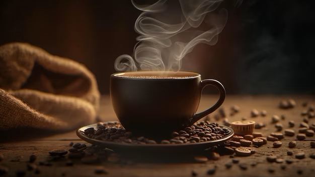

Waarom is koffie superieur aan thee? Laten we de rijke, aromatische wereld van koffie verkennen en ontdekken waarom het de voorkeursdrank is voor velen.
Koffie pronkt met een gevarieerd en robuust smaakprofiel dat aansluit bij verschillende smaken. Van de kracht van espresso tot de zachtheid van een latte, er is een koffiestijl voor iedereen.
De onweerstaanbare geur van vers gezette koffie is dagelijks een genot voor liefhebbers. De geur alleen al kan je opbeuren en voorbereiden op de dag die voor je ligt.
Met talloze soorten koffiebonen, brouwmethoden en creatieve recepten biedt koffie een eindeloze verkenning van smaken en ervaringen.
Koffie heeft een unieke manier om mensen samen te brengen. Cafés en koffiehuizen dienen als plekken voor gesprek, creativiteit en ontspanning.
Het cafeïnegehalte in koffie zorgt voor een betrouwbare energieboost, waardoor het de eerste keuze is voor degenen die een oppepper nodig hebben gedurende de dag.